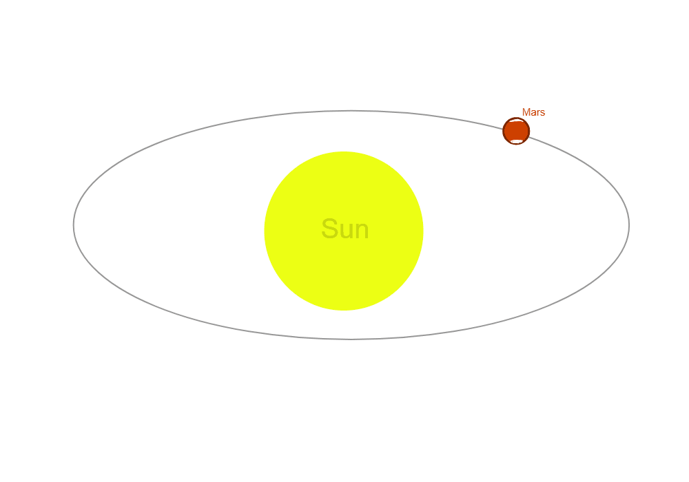
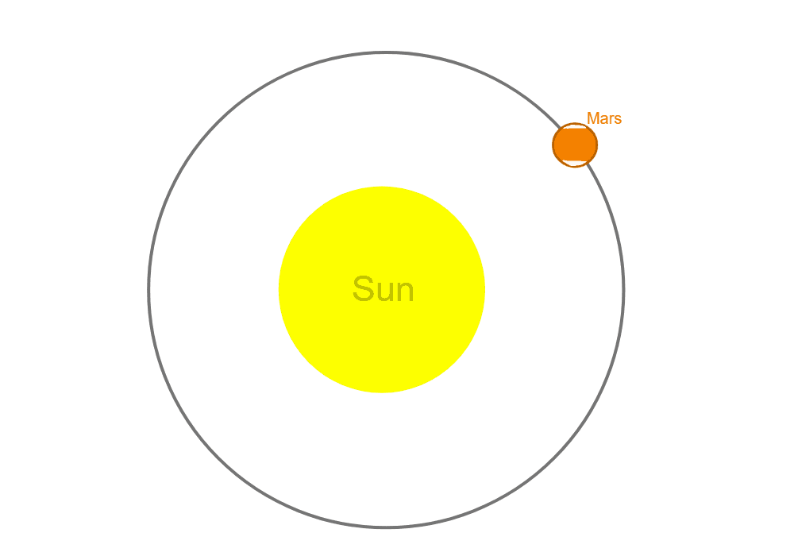
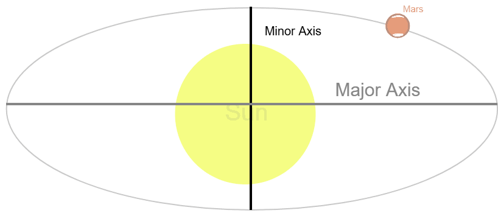

The first law states that every planet's orbit around its sun is elliptical, meaning that no plant can achieve a perfect circular orbit...

Here in this image, Mars is orbiting the sun. However notice that Mars doesn't have a perfect circlular orbit. If Mars were to have a circular orbit, it would look like this...

A planet's speed also is affected by their elliptical orbit as explained more into detail in the 2nd law.
The second law, Law of Areas, states that a line connected to a planet and its sun sweeps out equal areas in equal time. Looking back at the first law, since all planets have some form of elliptical orbit, the closer they are to their sun, the faster they are, and the farther they are, the slower they move...
Looking at this animation, notice how the planet moves the fastest when near the center of its orbit and the slowest when it is at the ends of the ellipse. This law is caused by the conservation of angular momentum where the planet's angular momentum remains the same throughout its orbit and there isn't any torque from an external force that disrupts this balance. This keeps the ratio between time and distance equal in its orbit.
Kepler's third law of planetary motion states that the sqaure of the time for a planet to perform one whole revolution or orbit around their sun is proportional to the semi-major axis of the planet's orbit cubed...
Unlike circles, ellipses don't have infinite diameters, they instead have two diameters called the major axis and the minor axis. The minor axis is the smaller axis out of the two which stretches vertically from the highest point of the ellipse to the lowest point. The major axis is the longer axis and stretches from the left to the right...

In the formula, we use the semi-major axis which is half of the major axis. So hypothetically, if the semi-major axis of Earth's orbit were to be instead 4 AU (Earth is 1 AU away from the sun) away from the sun, Earth would orbit 8x slower than normal...